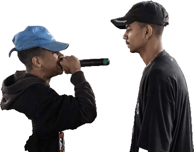

Então vem participar da nossa seletiva!
No universo das batalhas de rima, uma seletiva é a fase classificatória oficial que define os representantes para um torneio de maior porte.
Trata-se de uma etapa eliminatória onde os MCs disputam, com base no
mérito competitivo,
a
oportunidade de conquistar uma vaga para avançar a campeonatos regionais, estaduais ou
nacionais.

Na Seletiva da BDJ, o vencedor receberá a premiação em dinheiro padrão de toda Batalha da Junção, e garantirá uma vaga no nosso time profissional de Mcs.
| Primeiro Lugar | Segundo Lugar | Terceiro Lugar |
|---|---|---|
| 1000,00 R$ | 500,00 R$ | 200,00 R$ |
| Vaga no time da BDJ | Vaga na batalha de trio | Vaga na batalha semanal |
Quer tentar a sorte? Acesse o formulário de inscrição.

Kant será o nosso MC
convidado para prestigiar o evento.
Nosso maior apoiador, Kant vem de São Paulo para o frio de Rio Grande para acompanhar a nossa
seletiva!
Kant MC é o nome artístico de Bruno Souza de Lopes,
um rapper brasileiro de
freestyle e compositor.
Assista a esta batalha de Kant Mc x Jotapê na URB (Urban BR)